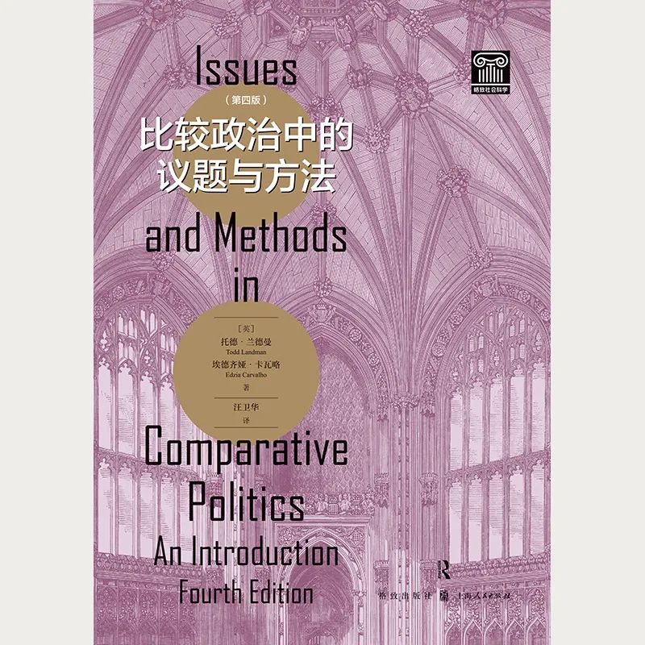

收录于合集 #政观书讯 16个
比较政治中的议题与方法（第四版）
原书名：Issues and Methods in Comparative Politics: An Introduction, Fourth Edition
作者：[英] 托德·兰德曼（Todd Landman） 埃德齐娅·卡瓦略（Edzia Carvalho）
译者：汪卫华

内容简介
本书旨在介绍政治学中的各种比较研究策略，为比较政治研究提供了基本而完备的导引，是一本深入浅出的教材。作者将具体方法置于首位，然后从方法论的角度，拷问比较政治中的“大问题”，力图教会学生思考比较政治研究背后的逻辑，以及政治学对系统性研究的要求。本书展现了比较方法如何能够帮助学者解释和理解政治现象，如何给研究问题添加“分析杠杆”，以及如何生成、澄清和支持重要的政治学理论与命题，提出了比较政治中的一些主导议题，并展望了未来比较政治研究领域将面临的实质性挑战和方法论挑战。
作者及译者简介
托德·兰德曼（Todd Landman）
英国诺丁汉大学社会科学学院副院长、政治学系教授。主要研究方向为政治发展、政治学研究方法。
埃德齐娅·卡瓦略（Edzia Carvalho）
英国邓迪大学政治学讲师。主要研究方向为政治行为、民主等。
译者简介
汪卫华
北京大学国际关系学院副教授。主要研究领域为比较政治、中国政治和社会科学研究方法。
目录
致谢
导言
第一部分 为何比较，如何比较，比较的难题
第一章 为何比较国家
第二章 如何比较国家
第三章 比较众多国家
第四章 比较若干国家
第五章 视若比较的单一国家研究
第二部分 比较比较研究
第六章 经济发展与民主
第七章 暴力性政治异议与社会革命
第八章 非暴力政治异议与社会运动
第九章 民主转型
第十章 制度设计与民主绩效
第十一章 人权
第十二章 国际关系与比较政治
第三部分 比较方法与新议题
第十三章 共同主题与不同比较
第十四章 比较政治的新挑战
术语汇编
参考文献
译后记
前言
本书旨在介绍政治学中各种比较研究策略，力图写成一本深入浅出的教材。它的目标人群是在政治科学、比较政治、区域研究（欧洲政治、俄罗斯及“后共产主义”地区政治、拉丁美洲政治、第三世界政治、非洲政治或亚洲政治）、公共政策、人权以及政治解释等研究领域修读课程或攻读学位的高年级本科生和一年级研究生。本书自觉地把具体方法置于首位，然后从方法论角度，拷问比较政治中各式各样的“大问题”，力求教会学生思考比较研究背后的逻辑，以及政治学对系统性研究的要求。故而，本书将“比较”视为达到目的（也就是解释观察到的政治现象）的一项重要手段。
这本书扎根于“做”政治学的某些特定方式方法。在不陷入政治学及广义上的社会科学不同研究路径持续不断的争论的前提下，只需要说以下这点就够了：本书假定存在可观察到的政治事件、行动者、利益、结构和结果，政治学家们可就这些作出合乎逻辑、有根据且有见地的分析性陈述。无论是被称为“实证主义”“行为主义”还是“后行为主义”（Von Wright 1971；Fay 1975；Sanders 1995；Lane 1996；Flyvbjerg 2001；Brady and Collier 2004；Caterino and Schram 2006），这种政治学研究风格专注于个体、群体或国家层次可被观察到的政治行为，并假定对上述行为的解释“可加以经验检验”（Sanders 1995：58）。因而，本书的立论基础是，比较政治终极观察对象的存在，绝大部分独立于且先于对它们的调查（参见Lane 1996；Lawson 1997）。此外，本书指出，政治世界由重要的经验性谜题构成，而政治学家则应用一套理论和方法，以图对这些谜题作出有意义的解释和理解（参见Gordon 1991：629—630）。即使存在资源上的天然约束，本书仍试图协助那些在研究政治与社会世界方面持类似看法的人，基于可获得的最佳经验证据，就政治现象作出陈述。我们承认，这些陈述不够完善，亦非确定，但通过提倡系统的和扎实的“调研程序”（King et al. 1994：6），本书试图帮助政治学人作出尽可能最佳的陈述。
为了实现上述主要目标，本书分为三个部分，可以分别阅读，也可依照它们在此呈现的顺序依次阅读。第一部分为“做”比较政治研究给出了科学上的辩护，包括：为什么政治学家要比较各个国家（第一章），他们如何比较各个国家，这么做时可能遇到的难题（第二章），比较众多国家（第三章）、若干国家（第四章）的策略与方法，以及单一国家研究如何服务于重要的比较用途（第五章）。第一部分展现了比较方法如何能够帮助学者们解释和理解在世界上观察到的政治现象；展现了通过比较一个个的国家、若干国家一起比以及同时比较众多国家，可以给某个研究问题加上什么样的“分析杠杆”；展现了比较方法如何有助于生成、澄清以及支持重要的政治学理论与命题；展现了为将比较研究的影响最大化，需要避免哪些关键难题。最后，这一部分试图将这些比较方法统一进同一推断逻辑之中（King et al. 1994），且主张没有哪一种方法较其他方法更胜一筹。当然，这一部分也勾勒了每种方法各自在其实现“有效推断”的能力上的长处与弱点。
第二部分运用第一部分中搭建的比较“架构”，提出了一些比较政治中的主导议题。这些议题依照下述标准选出：（1）它们在现有的比较研究文献中受到了广泛关注；（2）它们对比较政治学人有吸引力，产生了一定的回响；（3）它们特别适合于考察各种比较方法得以应用的不同方式。这些比较议题包括经济发展与民主（第六章）、暴力性政治异议与社会革命（第七章）、非暴力政治异议与社会运动（第八章）、民主转型（第九章）、制度设计与民主绩效（第十章）、人权（第十一章），以及国际关系与比较政治间的交叠（第十二章）。
第二部分的每一章都鉴别了主要的研究问题或疑问，详细说明了运用不同比较方法研究该问题的理想方式，回顾评点了这个话题上比较研究的主要发现。以这种方式，第二部分各章试图“比一比各种比较研究”，力求展示学者们如何选择研究问题、构思理论、阐明假说，以及运用比较方法去检验他们的假说。刚接触比较政治的学人，可从阅读第二部分各章开始，对比较研究文献中那些受到明显关注的议题类型略尝一镬之味；然后可以回到第一部分各章，看看不同的比较方法是如何发展完善的，以及每种方法如何赋予政治研究不同的长处与弱点。对于目前正研习比较政治或其他相关学科研究的学人，建议按照本书呈现的顺序依次阅读。建议所有读者都把第三部分留到最后再读。
第三部分总结了第二部分的主要结论，并展望了可预见的未来，本研究领域将面临的各种挑战。第十三章突出强调了通过对第二部分各种比较研究的比较所揭示的各种共同主题、方法论权衡以及研究差异的根源。第十四章以未来本领域将面对的实质性挑战和方法论挑战作结。该章简要回顾了自早期“公法阶段”以来，本领域的演进（Valenzuela 1988），考察了正趋发展完善的、用于跨国比较的各种新方法，同时为超越本领域中传统两分的方式方法申辩，讨论了将吸引比较学者关注的各种新议题。本书还包括了从比较研究的发现中提炼出来的许多图表，每章中用以澄清概念、术语和关系的“简报框”，每章结尾的延伸阅读建议，一份术语汇编，以及一份参考书目。总体来讲，处理比较政治中各种流行议题有不同比较方法，这本书从这些方法的讨论起步，逐步推进到有关本领域的过去和未来的反思。本书主要是一本关于方法的教材，应当作为一本指南读物，配合更趋理论导向的比较研究教科书来读——比如多安和普拉西的《如何比较国家》（Dogan and Pelassy 1990）；奇尔科特的《比较政治理论》（Chilcote 1994）；利希巴赫和祖克曼的《比较政治：理性、文化和结构》（Lichbach and Zuckerman 1997）；彼得斯的《比较政治：理论与方法》（Peters 1998）；利希巴赫和寇普斯坦的《比较政治：变革全球秩序中的利益、认同与制度》（Lichbach and Kopstein 2000）；海伊的《政治分析》（Hay 2002）；布雷迪和科利尔的《反思社会调研》（Brady and Collier 2004）；乔治和班尼特的《社会科学中的个案研究与理论发展》（George and Bennett 2005）；以及盖林的《个案研究：原则与实践》（Gerring 2006）。
书摘
本书旨在介绍政治学中各种比较研究策略，力图写成一本深入浅出的教材。它的目标人群是在政治科学、比较政治、区域研究（欧洲政治、俄罗斯及“后共产主义”地区政治、拉丁美洲政治、第三世界政治、非洲政治或亚洲政治）、公共政策、人权以及政治解释等研究领域修读课程或攻读学位的高年级本科生和一年级研究生。本书自觉地把具体方法置于首位，然后从方法论角度，拷问比较政治中各式各样的“大问题”，力求教会学生思考比较研究背后的逻辑，以及政治学对系统性研究的要求。故而，本书将“比较”视为达到目的（也就是解释观察到的政治现象）的一项重要手段。
这本书扎根于“做”政治学的某些特定方式方法。在不陷入政治学及广义上的社会科学不同研究路径持续不断的争论的前提下，只需要说以下这点就够了：本书假定存在可观察到的政治事件、行动者、利益、结构和结果，政治学家们可就这些作出合乎逻辑、有根据且有见地的分析性陈述。无论是被称为“实证主义”“行为主义”还是“后行为主义”（Von Wright 1971；Fay 1975；Sanders 1995；Lane 1996；Flyvbjerg 2001；Brady and Collier 2004；Caterino and Schram 2006），这种政治学研究风格专注于个体、群体或国家层次可被观察到的政治行为，并假定对上述行为的解释“可加以经验检验”（Sanders 1995：58）。因而，本书的立论基础是，比较政治终极观察对象的存在，绝大部分独立于且先于对它们的调查（参见Lane 1996；Lawson 1997）。此外，本书指出，政治世界由重要的经验性谜题构成，而政治学家则应用一套理论和方法，以图对这些谜题作出有意义的解释和理解（参见Gordon 1991：629—630）。即使存在资源上的天然约束，本书仍试图协助那些在研究政治与社会世界方面持类似看法的人，基于可获得的最佳经验证据，就政治现象作出陈述。我们承认，这些陈述不够完善，亦非确定，但通过提倡系统的和扎实的“调研程序”（King et al. 1994：6），本书试图帮助政治学人作出尽可能最佳的陈述。
为了实现上述主要目标，本书分为三个部分，可以分别阅读，也可依照它们在此呈现的顺序依次阅读。第一部分为“做”比较政治研究给出了科学上的辩护，包括：为什么政治学家要比较各个国家（第一章），他们如何比较各个国家，这么做时可能遇到的难题（第二章），比较众多国家（第三章）、若干国家（第四章）的策略与方法，以及单一国家研究如何服务于重要的比较用途（第五章）。第一部分展现了比较方法如何能够帮助学者们解释和理解在世界上观察到的政治现象；展现了通过比较一个个的国家、若干国家一起比以及同时比较众多国家，可以给某个研究问题加上什么样的“分析杠杆”；展现了比较方法如何有助于生成、澄清以及支持重要的政治学理论与命题；展现了为将比较研究的影响最大化，需要避免哪些关键难题。最后，这一部分试图将这些比较方法统一进同一推断逻辑之中（King et al. 1994），且主张没有哪一种方法较其他方法更胜一筹。当然，这一部分也勾勒了每种方法各自在其实现“有效推断”的能力上的长处与弱点。
第二部分运用第一部分中搭建的比较“架构”，提出了一些比较政治中的主导议题。这些议题依照下述标准选出：（1）它们在现有的比较研究文献中受到了广泛关注；（2）它们对比较政治学人有吸引力，产生了一定的回响；（3）它们特别适合于考察各种比较方法得以应用的不同方式。这些比较议题包括经济发展与民主（第六章）、暴力性政治异议与社会革命（第七章）、非暴力政治异议与社会运动（第八章）、民主转型（第九章）、制度设计与民主绩效（第十章）、人权（第十一章），以及国际关系与比较政治间的交叠（第十二章）。
第二部分的每一章都鉴别了主要的研究问题或疑问，详细说明了运用不同比较方法研究该问题的理想方式，回顾评点了这个话题上比较研究的主要发现。以这种方式，第二部分各章试图“比一比各种比较研究”，力求展示学者们如何选择研究问题、构思理论、阐明假说，以及运用比较方法去检验他们的假说。刚接触比较政治的学人，可从阅读第二部分各章开始，对比较研究文献中那些受到明显关注的议题类型略尝一镬之味；然后可以回到第一部分各章，看看不同的比较方法是如何发展完善的，以及每种方法如何赋予政治研究不同的长处与弱点。对于目前正研习比较政治或其他相关学科研究的学人，建议按照本书呈现的顺序依次阅读。建议所有读者都把第三部分留到最后再读。
第三部分总结了第二部分的主要结论，并展望了可预见的未来，本研究领域将面临的各种挑战。第十三章突出强调了通过对第二部分各种比较研究的比较所揭示的各种共同主题、方法论权衡以及研究差异的根源。第十四章以未来本领域将面对的实质性挑战和方法论挑战作结。该章简要回顾了自早期“公法阶段”以来，本领域的演进（Valenzuela 1988），考察了正趋发展完善的、用于跨国比较的各种新方法，同时为超越本领域中传统两分的方式方法申辩，讨论了将吸引比较学者关注的各种新议题。本书还包括了从比较研究的发现中提炼出来的许多图表，每章中用以澄清概念、术语和关系的“简报框”，每章结尾的延伸阅读建议，一份术语汇编，以及一份参考书目。总体来讲，处理比较政治中各种流行议题有不同比较方法，这本书从这些方法的讨论起步，逐步推进到有关本领域的过去和未来的反思。本书主要是一本关于方法的教材，应当作为一本指南读物，配合更趋理论导向的比较研究教科书来读——比如多安和普拉西的《如何比较国家》（Dogan and Pelassy 1990）；奇尔科特的《比较政治理论》（Chilcote 1994）；利希巴赫和祖克曼的《比较政治：理性、文化和结构》（Lichbach and Zuckerman 1997）；彼得斯的《比较政治：理论与方法》（Peters 1998）；利希巴赫和寇普斯坦的《比较政治：变革全球秩序中的利益、认同与制度》（Lichbach and Kopstein 2000）；海伊的《政治分析》（Hay 2002）；布雷迪和科利尔的《反思社会调研》（Brady and Collier 2004）；乔治和班尼特的《社会科学中的个案研究与理论发展》（George and Bennett 2005）；以及盖林的《个案研究：原则与实践》（Gerring 2006）。
第一章 为何比较国家
作比较是人类自然而然的活动。从古至今，人类世世代代都试图理解和解释他们所感知到的彼此之间的相似性与不同点。尽管历史上新人群的发现，往往是去征服他们的欲望的产物，但理解征服者与被征服者之间的相似性与不同点仍很必要。世界各国公民皆依下列诸多不同的维度，不断地去比较自身与他人在社会中的地位：（1）他们在地域、族群、语言、宗教、家族及文化上的各种效忠感与认同感；（2）他们拥有的有形资产，经济、社会与政治地位；（3）他们在权力和权威体系中所处的相对位置。您只需观察一下自2010年末以来，蔓延中东与北非各地的诸多戏剧性变化，就可以看到各式各样的相似性与不同点把普通人强烈地煽动起来、投身变革之中。于私而言，个体在成长过程中，总是对其时装款式、朋友圈子、音乐专辑、同伴行为举止、父母挣钱多少、自己就读的大学以及可能取得的前程等感到焦虑。他们拿自己的选择、境遇与成就，与基线标准和准则（无论确定与否）相比，这些忧虑也就随之而变。
简言之，比较即为人。但除了这些日常比较之外，如何使比较过程变得科学？国家之间的比较又如何帮助我们理解更广阔的政治世界？为了回答这些重要问题，本章分为四节。第一节提出比较的四项主要理由：（1）处境描述；（2）分类和“类型化”；（3）假说检验与理论建构；（4）预测（Hague et al. 1992：24—27；Mackie and Marsh 1995：173—176；Franzese 2007；Kopstein and Lichbach 2008a, 2008b；Landman and Robinson 2009b）。本节指出，若比较学者希望用对于跨国观察资料的系统分析，来解决现实世界的诸多难题，上述理由是累积性的和相互加强的。第二节阐明政治学及其比较政治次领域如何能变得科学，简要勾勒政治学和自然科学之间的相似性与不同点；其间，我们要说明政治学中的证据与推断为什么关联起来，以及是如何关联起来的，它们又如何构成了比较政治科学的基础。第三节澄清前述讨论中用到的术语和概念，以及政治科学如何需要它们，包括：（1）理论与方法；（2）本体论、认识论与方法论；（3）个案、分析单位、变项与观察结果；（4）分析层次及生态学和个体论谬误；（5）定量与定性方法。第四节总结这些为一门比较政治科学所需的各种理由、辩解与术语，并为这本教材第一部分接下来有关如何比较国家的详尽讨论的各章铺平道路。
比较的理由
比较各国的活动，围绕四项主要目标进行，在任何系统的比较研究中，它们皆相互增强，但依据学者的研究与分析旨趣，有一些目标比别的目标更受到强调。处境描述使政治学家得以了解其他国家是什么样子。分类则能降低政治世界的复杂性，为研究者有效地提供把经验证据组织进去的“资料容器”（Sartori 1970：1039）。比较的假说检验功能，令裁汰关于特定时间、行动者、结构等的竞争解释可行，从而有助于建构更一般化的理论。最后，各国间比较，以及由比较得出的一般化概括，使得某些预测得以作出——或是关于那些未纳入原初比较研究的国家的可能结果的预测；或是经由细致的比较，分析断定只要其中某些显著的前置因素和条件存在，便能预测未来将出现的结果。
编辑：张天一